Índice
1. Acerca de este manual
Este manual describe el uso de Control Dental App (CDA): qué hace cada sección del menú, qué significa cada dato que se muestra en pantalla, y las reglas de negocio que determinan cómo se calculan e interpretan los reportes financieros.
Las imágenes de este documento corresponden a capturas reales del sistema en uso.
2. Acceso al sistema
Iniciar sesión
- Abrir la dirección web de Control Dental App en el navegador (aquella que fue proporcionada por quien le entregó el sistema).
- Escribir el usuario y la contraseña asignados.
- Dar clic en Ingresar.
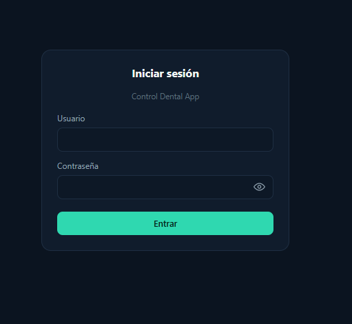
Si la contraseña fue asignada por un administrador como contraseña temporal, el sistema solicita cambiarla antes de continuar. Ver Mi cuenta → Cambiar mi contraseña.
Cierre de sesión por inactividad
Por seguridad, el sistema cierra la sesión automáticamente después de un periodo sin actividad (clics, tecleos o toques; el desplazamiento de la pantalla no cuenta como actividad). Antes de cerrarla, se muestra un aviso con la opción de continuar conectado.
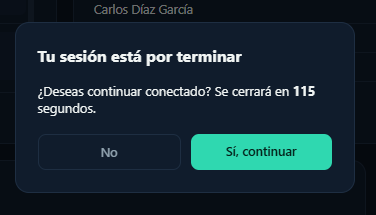
Adicionalmente, existe un tiempo máximo de sesión: pasado ese límite, el sistema pide iniciar sesión de nuevo aunque haya actividad constante, esto está implementado como una medida de seguridad en el manejo de su información.
Versión del sistema
En la parte superior derecha de la pantalla aparece la etiqueta "Versión". Al dar clic sobre ella se despliega la versión actual de los 3 componentes del sistema:
- Interfaz: la vista de la aplicación que ve en su dispositivo en este momento.
- Servidor: el motor que procesa la información.
- Base de datos: la estructura donde se guarda la información del consultorio.
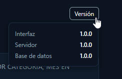
Esta información es útil principalmente para soporte técnico: al reportar un problema, es recomendable indicar los 3 números que se muestran ahí.
4. Dashboard
Es la pantalla de inicio del sistema. Reúne, en un solo lugar, un resumen del día y de los indicadores más consultados con frecuencia, para no tener que entrar a cada sección por separado.
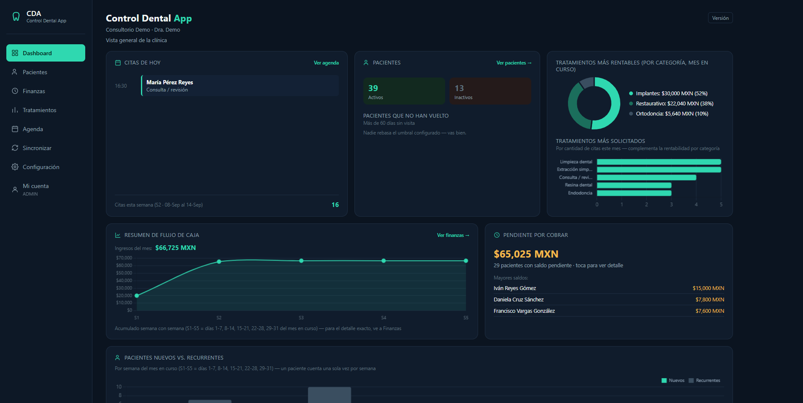
Citas de hoy
Muestra las citas restantes del día en curso. Si ya no quedan citas por atender hoy, muestra en su lugar las próximas citas agendadas a futuro. En la parte inferior de la tarjeta se muestra, de un vistazo, el total de citas agendadas para la semana en curso (sin contar las canceladas). Dar clic en Ver agenda para ir directamente a la sección Agenda.
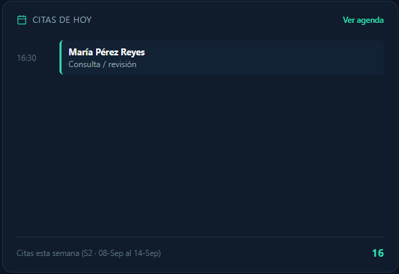
Pacientes
Muestra el total de pacientes Activos e Inactivos del consultorio. Dar clic en Ver pacientes para ir a la sección Pacientes.
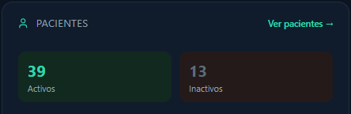
Pacientes que no han vuelto
Dentro de esta misma tarjeta se listan los pacientes Activos cuya última visita registrada supera el umbral de días configurado en Configuración (60 días por defecto, modificable únicamente por el Administrador). Los pacientes marcados como Inactivos nunca aparecen aquí (porque no se espera que vuelvan). Una vez que los pacientes se vuelven a activar, entran a esta función del sistema.
La "última visita" que se usa para este cálculo es la fecha de la cita más reciente que no esté cancelada (con fecha de hoy o anterior). Si el paciente no tiene ninguna cita registrada en el sistema, se usa la fecha de última visita capturada en su ficha.
Ejemplo: si un paciente Activo tuvo su última cita hace 65 días y el umbral configurado es de 60 días, aparecerá en esta lista. Si se marca como Inactivo, deja de aparecer, aunque el número de días sin visitarlo siga creciendo.
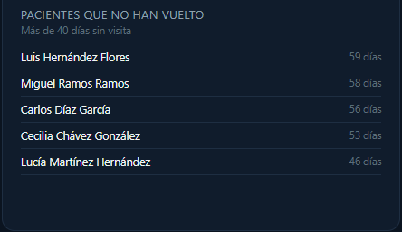
Tratamientos más rentables (por categoría, mes en curso)
Muestra, mediante una gráfica de dona, qué categorías de tratamiento generaron más ingresos durante el mes en curso, considerando únicamente los pagos con abono registrado ese mes. Esta métrica mide dinero generado, no cuántas veces se solicitó un tratamiento.
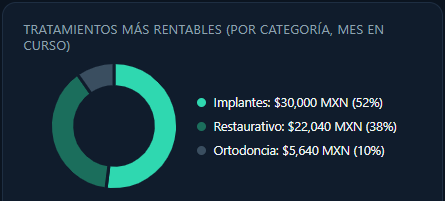
Tratamientos más solicitados
Debajo de la gráfica de rentabilidad, dentro de la misma tarjeta, se muestra una segunda gráfica con los tratamientos individuales con mayor número de citas registradas este mes (sin contar canceladas). Esta métrica mide frecuencia de solicitud, no dinero generado, y complementa a la de rentabilidad: puede haber un tratamiento muy solicitado que, por su precio, no llegue a figurar entre los de mayor rentabilidad por categoría; y al revés, una categoría puede ser muy rentable gracias a unos pocos tratamientos de alto costo, aunque no sean los más solicitados en cantidad.
Al pasar el mouse sobre cualquiera de las 2 gráficas (o mantener presionado en pantalla táctil) se muestra el dato exacto de esa categoría o tratamiento.
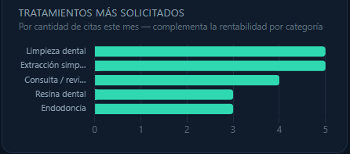
Resumen de flujo de caja
Muestra un adelanto de los ingresos del mes en curso (no incluye gastos), agrupados semana con semana dentro del mes (ver Aspectos a considerar, en Finanzas). Dar clic en Ver finanzas para ver el detalle completo.
Está prevista una actualización futura para incorporar también los gastos en esta misma vista.
Al pasar el mouse sobre cualquier punto de la gráfica se muestra el monto exacto de esa semana.
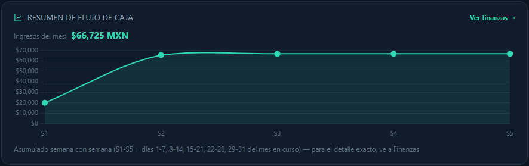
Pendiente por cobrar
Muestra el total de dinero pendiente de cobro en todo el consultorio, cuántos pacientes tienen saldo pendiente, y los 3 mayores saldos individuales. Dar clic sobre la tarjeta abre el detalle completo y permite registrar abonos a cada uno de los registros mostrados.
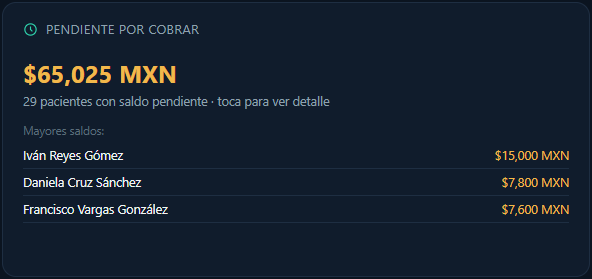
Pacientes nuevos vs. recurrentes
Compara, semana con semana dentro del mes en curso, cuántos pacientes tuvieron su primera cita registrada contra cuántos ya habían visitado antes. Esto permite saber de una manera rápida si el consultorio realmente está creciendo con una cartera nueva de pacientes o si solamente los ingresos proceden de pacientes que ya tienen cierta antigüedad.
Un paciente cuenta como nuevo únicamente en la semana de su primerísima cita registrada en todo el sistema, y solo si esa primera cita cae dentro del mes en curso. Cualquier otra cita, de ese mismo paciente o de cualquier otro, cuenta como recurrente.
Ejemplo: si hoy es septiembre y un paciente (Juan) tiene su primerísima cita registrada en el sistema el 5 de septiembre, esa semana cuenta como "nuevo" para Juan — y solo esa semana. Si Juan regresa el 20 de septiembre para otra cita, esa segunda cita ya cuenta como "recurrente" (no es su primera vez, aunque sea apenas su segunda visita en la vida). Y si otra paciente (María) tuvo su primera cita hace 2 años y este mes viene 3 veces, las 3 citas de María cuentan como "recurrente", porque su primera vez no fue este mes.
Excepción: si al dar de alta al paciente se marcó la casilla "Ya era mi paciente antes de usar el sistema" (ver Pacientes → Dar de alta un paciente), ese paciente nunca cuenta como nuevo en esta gráfica, ni siquiera en su primera cita registrada; porque ya era paciente del consultorio desde antes, solo que apenas está entrando al sistema.
Al pasar el mouse sobre cualquier barra se muestra el número exacto de pacientes nuevos y recurrentes de esa semana.
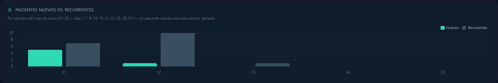
5. Pacientes
Concentra la ficha de cada paciente del consultorio: datos de contacto, tratamientos asignados y estado (Activo/Inactivo).
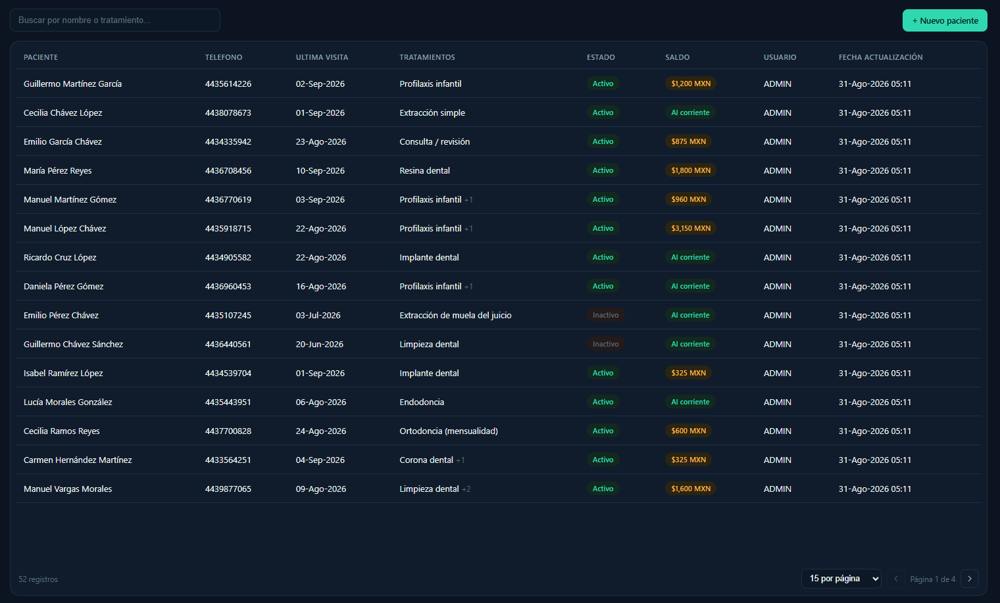
Buscar un paciente
- Escribir en el buscador de la parte superior de la tabla.
- El sistema filtra la lista conforme se escribe, por Paciente o Tratamiento.
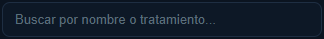
Dar de alta un paciente
- Dar clic en + Nuevo paciente.
- Llenar los campos obligatorios (Nombre completo y Teléfono).
- Llenar (si lo necesita) los campos de última visita y tratamientos, y marcar la casilla "Ya era mi paciente antes de usar el sistema" si el paciente ya visitaba el consultorio desde antes de usar CDA (afecta cómo se cuenta en Pacientes nuevos vs. recurrentes, en el Dashboard).
- Dar clic en Guardar.
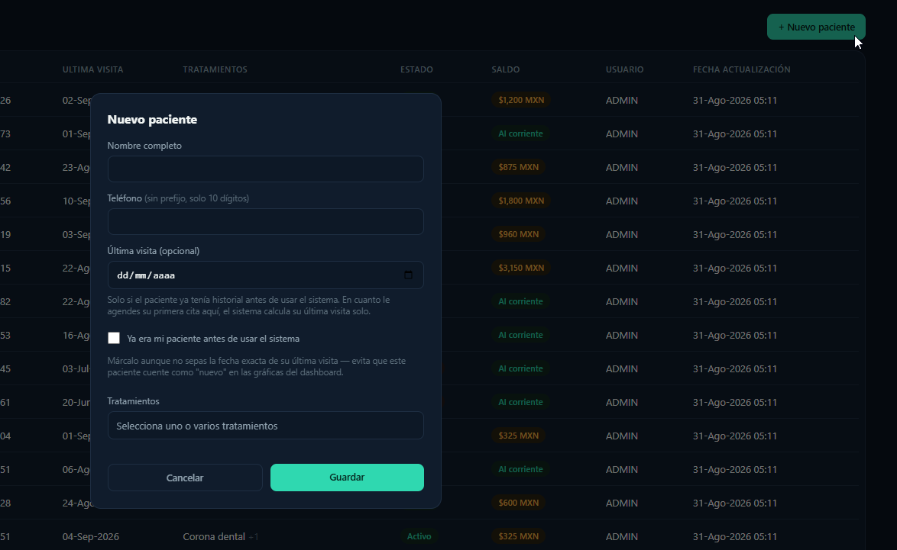
Editar un paciente
- Dar clic sobre algún registro en la lista. Aparecerá una ventana emergente con la ficha del paciente. Dar clic en Editar.
- Modificar el campo deseado (Nombre completo, Teléfono, Tratamientos).
- Dar clic en Guardar.
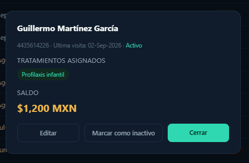
Importante: cambiar el nombre de un paciente no modifica los registros de Pagos o Citas ya existentes; esos registros conservan el nombre tal como estaba escrito en el momento en que se crearon.
Tratamientos asignados a un paciente
Es una referencia rápida de qué tratamientos tiene vigentes el paciente actualmente. No es un historial ni afecta ningún cálculo financiero, pero sí tiene un efecto funcional importante: es la lista que determina qué tratamientos siguen apareciendo como opción para ese paciente en particular al registrar un pago o agendar una cita nueva, incluso si ese tratamiento ya se marcó como Inactivo en el catálogo general (ver Tratamientos → Desactivar un tratamiento). Quitar un tratamiento de esta lista no elimina ni modifica ningún pago ya registrado para ese tratamiento, pero sí deja de ofrecerlo como opción futura para este paciente si además está Inactivo en el catálogo.
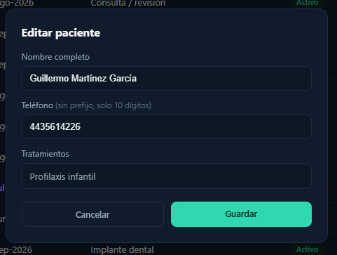
El historial completo de lo que un paciente ha pagado (incluyendo tratamientos que ya no aparecen en su ficha) se consulta en Finanzas.
Saldo pendiente de un paciente
Desde la ficha del paciente se puede consultar su saldo pendiente, si lo tiene. El historial completo de sus pagos se consulta en Finanzas.

Marcar un paciente como Inactivo
Los pacientes nunca se eliminan del sistema (la forma de darlos de baja es marcarlos como Inactivos), esto con el propósito de conservar su historial completo y poder reactivarlos si regresan más adelante.
- Dar clic sobre el registro deseado en la lista, aparecerá una ventana emergente con la ficha del paciente.
- Dar clic en el botón Marcar como inactivo.
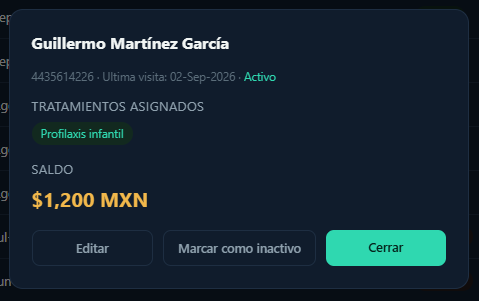
Un paciente Inactivo deja de contarse en indicadores como "Pacientes que no han vuelto" (Dashboard), pero conserva todo su historial de pagos y citas.
6. Finanzas
Concentra los indicadores financieros del consultorio: ingresos, gastos, saldos pendientes y su comportamiento a lo largo del tiempo.
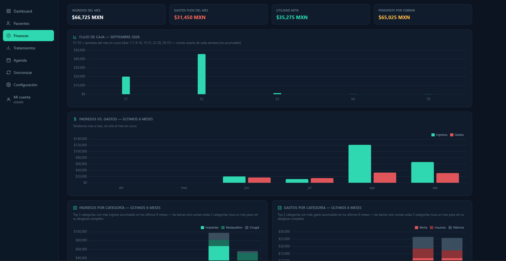
Aspectos a considerar
Antes de interpretar cualquier gráfica de esta sección, es importante tener presentes estas 2 reglas de fondo:
Qué fecha usa cada gráfica
Todas las gráficas financieras (Flujo de caja, Ingresos por categoría, Ingresos vs. Gastos) agrupan un pago según la fecha de su abono más reciente, nunca según la fecha en que se inició el tratamiento. Esas son dos fechas distintas dentro del mismo registro de pago:
- Inicio del tratamiento: cuándo comenzó a aplicarse, editable al registrar el pago (por defecto, el día de hoy).
- Último abono: cuándo entró dinero realmente. Se actualiza cada vez que se registra un abono nuevo sobre ese pago.
Ejemplo: si un tratamiento se inició el 3 de marzo pero el paciente terminó de pagarlo el 20 de junio, ese ingreso aparece reflejado en junio en las gráficas financieras, no en marzo.
Un punto importante: si un mismo pago recibe abonos en meses distintos (por ejemplo, uno en marzo y otro en junio), el monto completo se agrupa en el mes del abono más reciente (junio); no se reparte proporcionalmente entre los meses en los que realmente se fue abonando. Está prevista una actualización futura para que cada abono se vea reflejado en el mes en que se hizo.
Cómo se dividen las semanas dentro de un mes
Para todo lo que este sistema agrupa "por semana" (el flujo de caja, las citas de la semana, pacientes nuevos vs. recurrentes), el mes se divide siempre en 5 bloques fijos de 7 días, sin importar qué día de la semana caiga cada fecha en el calendario real:
| Bloque | Días del mes |
|---|---|
| S1 | 1 al 7 |
| S2 | 8 al 14 |
| S3 | 15 al 21 |
| S4 | 22 al 28 |
| S5 | 29 en adelante (hasta el fin del mes) |
Esto es intencional: una semana de calendario real (lunes a domingo) casi siempre cruza de un mes a otro, y eso mezclaría ingresos de 2 meses distintos dentro de la misma "semana". El sistema prioriza que cada mes se pueda leer de forma exacta y comparable contra otros meses, por encima de que el bloque "semana" coincida con el calendario real.
Ejemplo: el día 21 y el día 22 son consecutivos en el calendario, pero caen en bloques distintos (S3 y S4) porque pertenecen a "semanas" de conteo diferentes dentro del mes.
Flujo de caja
Muestra los ingresos del mes en curso (no incluye gastos), agrupados en los 5 bloques (S1-S5) descritos arriba.
Está prevista una actualización futura para incorporar también los gastos en esta gráfica.
Al pasar el mouse sobre cualquier punto se muestra el monto exacto de ese bloque de días.
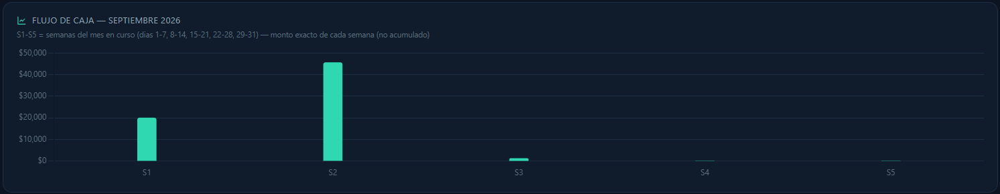
Ingresos vs. Gastos — últimos 6 meses
Compara, mes contra mes, el total de ingresos contra el total de gastos de los últimos 6 meses (incluyendo el mes en curso).
Al pasar el mouse sobre cualquier barra se muestra el monto exacto de ingresos o gastos de ese mes.
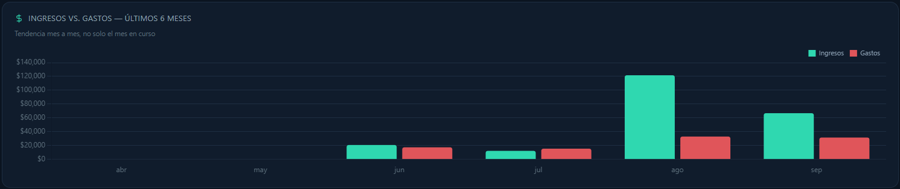
Ingresos por categoría — últimos 6 meses
Muestra qué proporción de los ingresos totales de los últimos 6 meses corresponde a cada categoría de tratamiento.
Importante: cada pago guarda su propia categoría al momento de crearse. Si más adelante se cambia la categoría de un tratamiento en el catálogo, los pagos ya registrados de ese tratamiento no cambian de categoría en esta gráfica; solo los pagos que se registren después del cambio usan la categoría nueva.
Ejemplo: si un tratamiento estaba categorizado como "Estética" y se cambia a "Restaurativa", los pagos ya cobrados antes de ese cambio se siguen contando como "Estética" en esta gráfica; solo los pagos nuevos de ese tratamiento se cuentan como "Restaurativa".
Esta gráfica solo suma las 3 categorías con más ingreso acumulado; el resto se agrupan para no saturar la vista. Al pasar el mouse sobre cualquier barra se muestra el monto exacto de esa categoría en ese mes, y dar clic (o toque, en pantalla táctil) sobre un mes específico abre el desglose completo de ese mes, incluyendo las categorías que no aparecen entre las 3 principales.
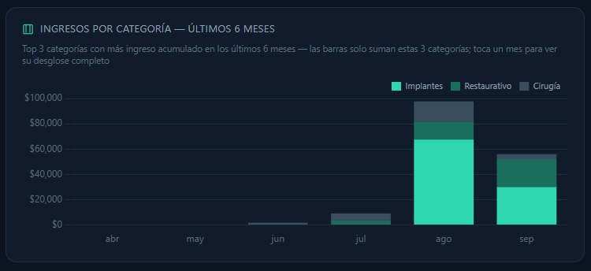
Gastos por categoría — últimos 6 meses
Mismo principio que la gráfica de ingresos por categoría, aplicado a los gastos del consultorio: solo suma las 3 categorías con más gasto acumulado. Al pasar el mouse sobre cualquier barra se muestra el monto exacto de esa categoría en ese mes, y dar clic (o toque) sobre un mes específico abre el desglose completo, incluyendo las categorías que no aparecen entre las 3 principales.
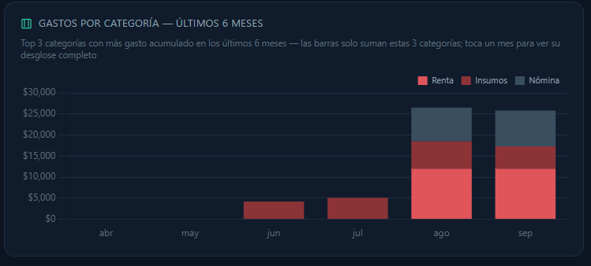
Pagos
En esta tabla se muestran todos los pagos de sus pacientes que se han registrado en el sistema a lo largo del tiempo, permitiendo llevar un control preciso en la información.
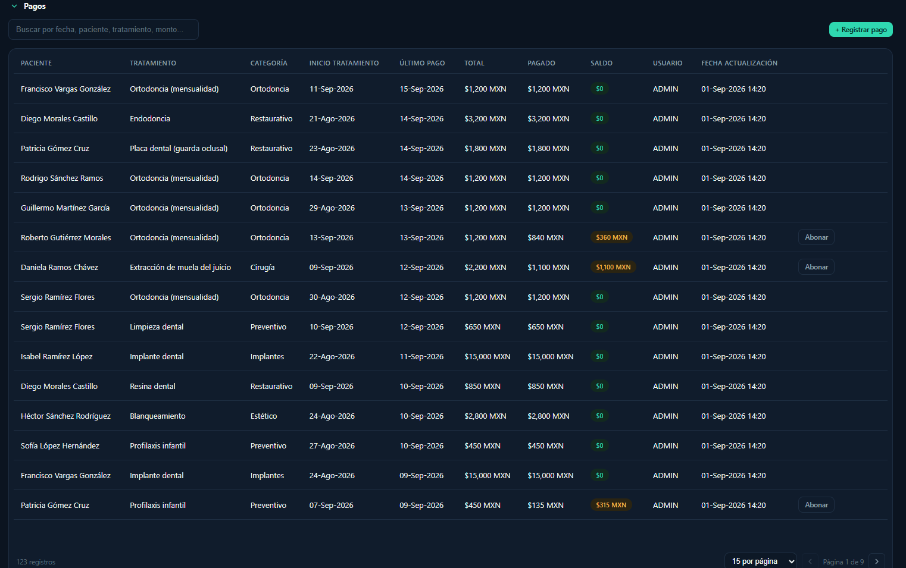
Buscar un pago
- Escribir en el buscador de la parte superior de la tabla.
- El sistema filtra la lista por Paciente, tratamiento, categoría, fecha o monto.
Sobre "fecha" y "monto" en este buscador: el registro tiene 2 columnas de fecha (Inicio de tratamiento y Último pago) y 3 columnas de dinero (Total, Pagado y Saldo) — el buscador revisa las 5 al mismo tiempo, sin importar en cuál de ellas esté el dato que se busca. La búsqueda encuentra el resultado sin importar el formato de fecha ni el separador de miles configurados en el sistema.
Registrar un pago
- Dar clic en Registrar pago.
- Llenar los campos obligatorios (Paciente y Tratamiento).
- Llenar (si lo necesita) la fecha de inicio del tratamiento y el monto pagado. Esto está pensado así por si alguna vez tiene que registrar la información primero pero aún no ha recibido el pago correspondiente. Dentro del sistema podrá ingresar el monto cuando lo necesite como un abono.
- Dar clic en Guardar.
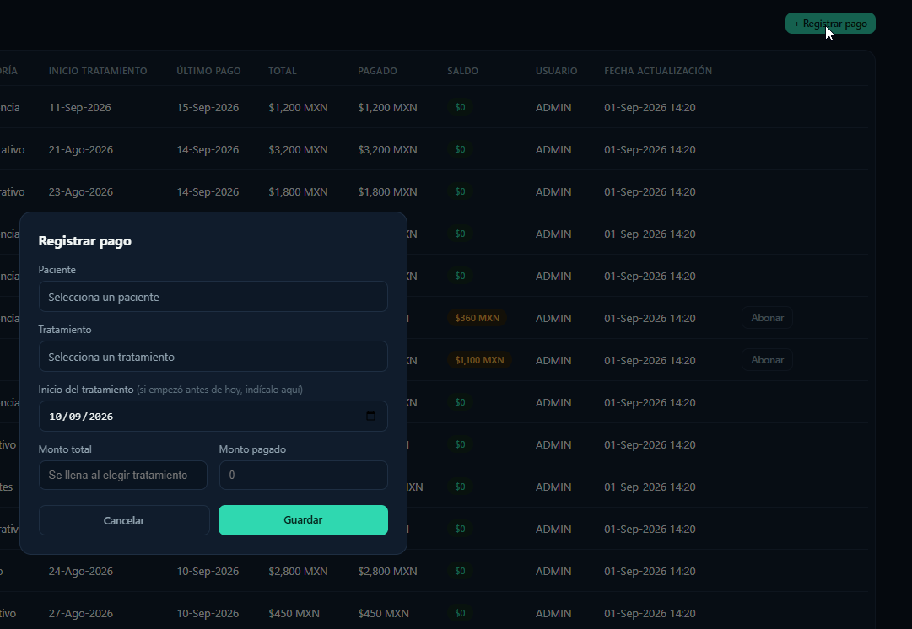
Importante, leer antes de guardar: una vez guardado, un pago no se puede editar ni eliminar, salvo que su monto abonado sea exactamente $0 (es decir, que todavía no se le haya registrado ningún abono). En cuanto tiene cualquier abono, el registro es permanente. Por lo que de ahí en adelante solo se podrán registrar abonos adicionales sobre el saldo pendiente.
Si ya existe un pago pendiente para ese mismo paciente y tratamiento, el sistema pregunta si se desea abonar a uno de los existentes en vez de crear un registro nuevo. Puede haber más de uno abierto a la vez; por ejemplo, si se registraron 2 rondas del mismo tratamiento por separado (una limpieza dental de hace 6 meses que quedó con saldo, y una limpieza nueva que se factura hoy); en ese caso el sistema deja elegir a cuál de los existentes abonar, o crear uno nuevo si de verdad se trata de un servicio distinto.
Registrar abonos
Dentro de la misma tabla, cada pago con saldo pendiente muestra el botón Abonar. Al darle clic se abre un formulario con el saldo actual, donde se captura el monto del abono. El "Último pago" y el saldo del registro se actualizan de inmediato.
Cada pago también muestra un botón Eliminar, visible únicamente cuando el monto abonado es $0 (todavía no se le ha registrado ningún abono). En cuanto recibe su primer abono, ese botón desaparece y el registro solo puede seguir recibiendo abonos.
Gastos fijos
En esta tabla se listan todos los gastos registrados en el sistema a lo largo del tiempo, permitiendo llevar un control preciso en la información.
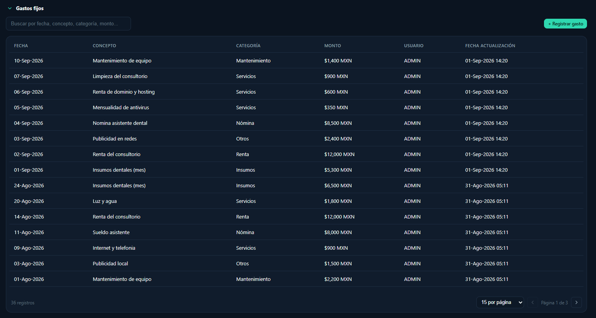
Buscar un gasto
- Escribir en el buscador de la parte superior de la tabla.
- El sistema filtra la lista por Fecha, concepto, categoría o monto.
La búsqueda encuentra el resultado sin importar el formato de fecha ni el separador de miles configurados en el sistema.
Registrar un gasto
- Dar clic en Registrar gasto.
- Llenar los campos obligatorios (Concepto y Monto).
- Cambiar la categoría de acuerdo al gasto que se está ingresando en el sistema.
- Dar clic en Guardar.
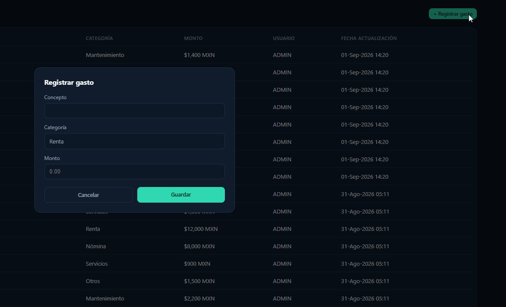
Un gasto nunca se elimina, pero a diferencia de un pago, sí se puede editar en cualquier momento (concepto, categoría y monto). La edición se hace seleccionando el registro a modificar y cambiando los datos que necesite.
Categorías de gasto
Al igual que en Tratamientos, las categorías de gasto se crean, renombran o eliminan directamente desde el selector de categoría del formulario de gasto. A diferencia de un tratamiento (donde la categoría vive en el catálogo y cada pago guarda su propia copia), en un gasto la categoría es un campo directo del propio registro; cambiarla es simplemente editar ese gasto, como se editaría el concepto o el monto.
- Renombrar una categoría no actualiza el nombre en los gastos que ya la tenían asignada, cada uno conserva el texto que tenía en su momento.
- Una categoría solo se puede eliminar si ningún gasto la tiene asignada actualmente.
7. Tratamientos
En esta tabla se muestra la lista de los tratamientos que ofrece el consultorio y que puede asignar a los pacientes para sus citas y el registro de sus pagos.
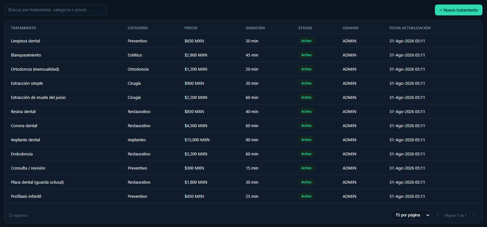
Buscar un tratamiento
- Escribir en el buscador de la parte superior de la tabla.
- El sistema filtra la lista por Tratamiento, categoría o precio.
Dar de alta un tratamiento
- Dar clic en Nuevo tratamiento.
- Llenar los campos obligatorios (Nombre y Precio).
- Cambiar la categoría y la duración de acuerdo al tratamiento que se está ingresando en el sistema.
- Dar clic en Guardar.
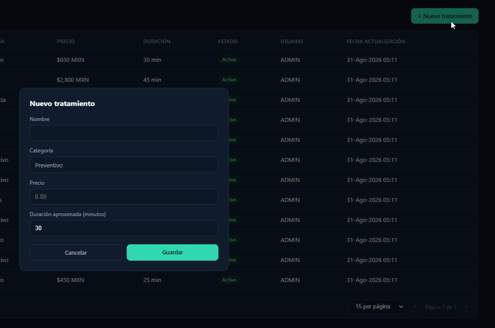
Editar un tratamiento
Se pueden editar los mismos 4 campos (Nombre, Categoría, Precio, Duración) en cualquier momento, sin riesgo de alterar información histórica: los pagos y citas que ya se crearon conservan su propia copia guardada del precio, la categoría y la duración que tenían al momento de registrarse. Solo la nueva información que se registre en el sistema a partir del cambio usa los valores actualizados.
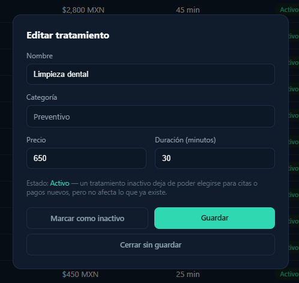
Desactivar un tratamiento
Los tratamientos nunca se eliminan del catálogo, se marcan como Inactivos para conservar la integridad de la información.
Un tratamiento Inactivo deja de aparecer en el catálogo general al elegir un tratamiento para un paciente o cita nueva. Sin embargo, si un paciente ya lo tenía en su lista de Tratamientos asignados antes de desactivarlo, ese tratamiento sigue apareciendo como opción para ese paciente en particular, y se puede seguir usando con normalidad para registrar pagos o agendar citas de seguimiento; es precisamente esa lista de la ficha del paciente la que permite esta excepción.
Categorías de tratamiento
Las categorías se crean, renombran o eliminan directamente desde el selector de categoría del formulario de tratamiento.
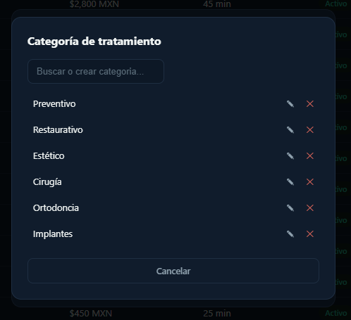
- Renombrar una categoría no actualiza el nombre en los tratamientos o gastos que ya la tenían asignada, cada uno conserva el texto que tenía en su momento.
- Una categoría solo se puede eliminar si ningún tratamiento la tiene asignada actualmente.
8. Agenda
En este menú del sistema puede administrar las citas del consultorio, con dos formas de visualizarlas: Lista y Calendario.
La Vista Calendario, a su vez, se puede consultar por Día, Semana o Mes, según qué tanto detalle o panorama se necesite en el momento; el selector para cambiar entre estas 3 está dentro de la propia Vista Calendario.
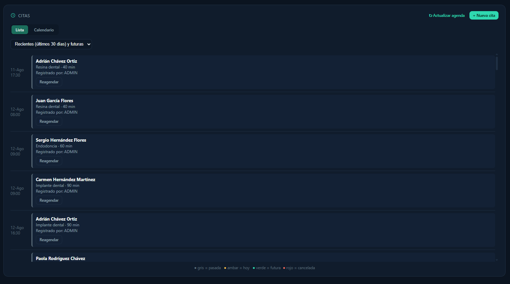
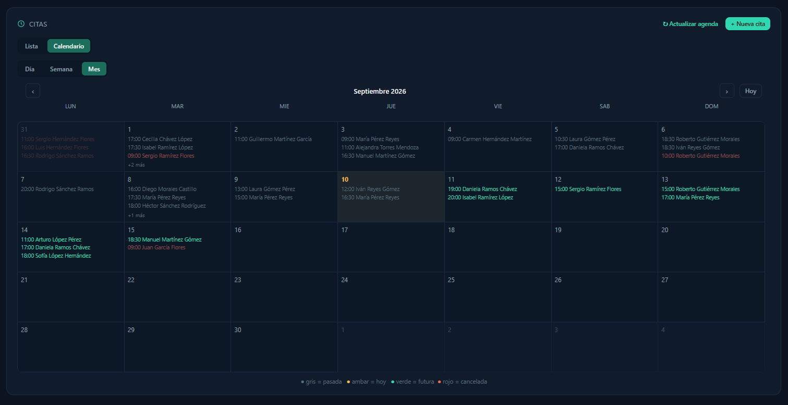
Agendar una cita nueva
- Dar clic en Nueva cita.
- Seleccionar el paciente y el(los) tratamiento(s) para dicha cita.
- Seleccionar la fecha y hora.
- Dar clic en Agendar y crear en Google Calendar.
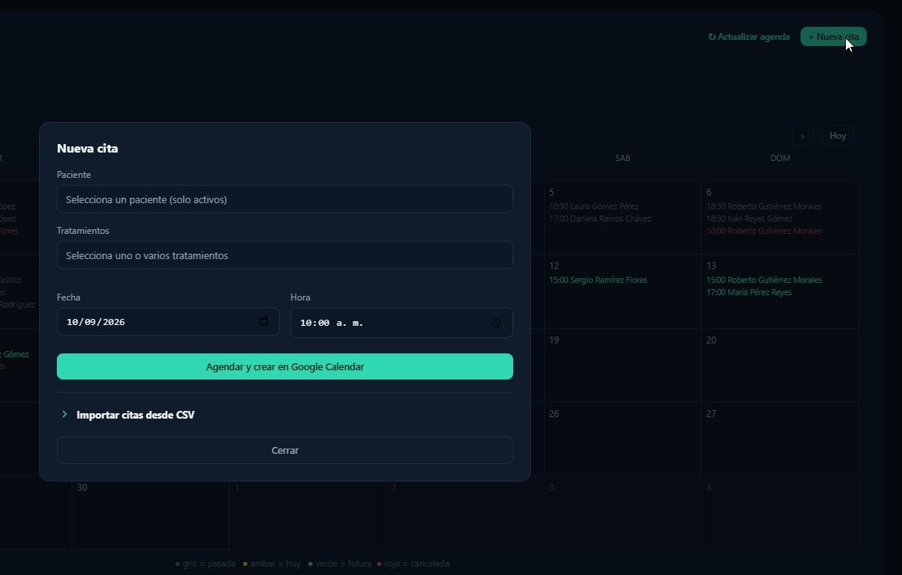
Nota: cada cita agendada desde el sistema crea también un evento correspondiente en el Google Calendar vinculado al consultorio.
Citas empalmadas
Si al agendar o reagendar una cita el horario coincide con otra ya existente, el sistema muestra un aviso, pero permite continuar de todas formas. Esto está pensado así, ya que hay consultorios con más de un doctor o unidad dental, en donde 2 citas al mismo tiempo son perfectamente válidas.
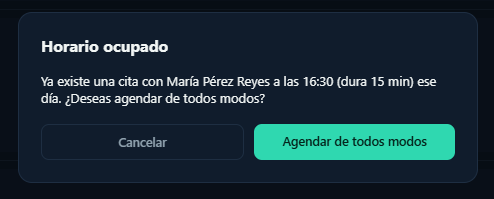
En la Vista Calendario, las citas empalmadas se muestran una al lado de la otra en columnas, para poder distinguirlas de un vistazo.
Importar citas desde un archivo CSV
Dentro del mismo formulario de "Nueva cita" hay una sección para importar varias citas a la vez desde un archivo CSV con 4 columnas, en este orden exacto: Paciente, Tratamientos, Fecha, Hora. Cada renglón del archivo es una cita distinta. El paciente debe existir en el sistema y estar activo. Si una cita tiene más de un tratamiento, se separan con punto y coma (;) dentro de la misma columna.
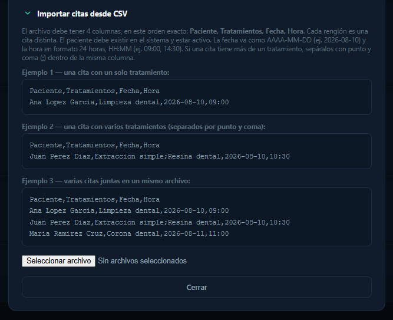
Actualizar la agenda
El botón "↻ Actualizar agenda" trae del servidor únicamente las citas más recientes, sin recargar toda la pantalla. Esto es útil si otra persona agendó o canceló algo desde otro dispositivo.
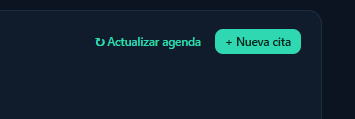
Cancelar una cita
Cancelar una cita nunca la elimina del sistema: queda marcada como "Cancelada" y se sigue mostrando en la Vista Lista con su propio distintivo visual, para conservar el detalle completo del día. Sin embargo, no se cuenta en indicadores de carga de trabajo real, como "Citas de hoy" o "Tratamientos más solicitados".
En Google Calendar, en cambio, el evento sí se elimina por completo al cancelar la cita, para que el calendario operativo del día a día no muestre recordatorios de algo que ya no va a ocurrir.
9. Sincronizar
A través de esta función, puede traer la información más reciente del servidor sin necesidad de recargar toda la página. Esto es útil si otra persona ha realizado cambios desde otro dispositivo.
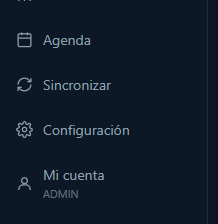
- Dar clic en el elemento del menú Sincronizar.
- Se mostrará una ventana emergente, dar clic en Sí.
Si la sincronización falla, el sistema muestra una ventana con el motivo exacto del error, en vez de un mensaje genérico. Esta información es útil para reportarla a soporte técnico si el problema persiste.
10. Configuración
Reúne los datos generales del consultorio, el horario de atención, el programa de referidos y (solo para el usuario Administrador) la gestión de usuarios del sistema.
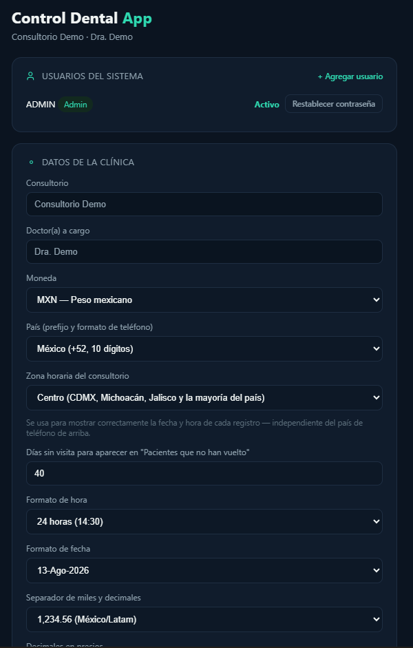
Datos y preferencias del consultorio
Incluye moneda, país (para el formato de teléfono), zona horaria, días sin visita para considerar a un paciente inactivo en el Dashboard, formato de hora y fecha, separador numérico, manejo de decimales en precios, primer día de la semana, y (solo visible para el Administrador) el umbral de minutos de inactividad antes del aviso de cierre de sesión (ver Acceso al sistema).
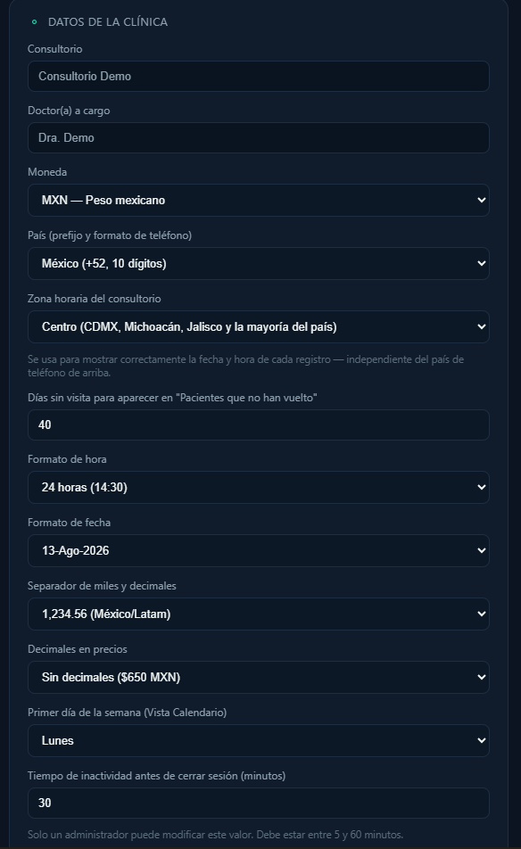
Horario de atención
Define los turnos de atención de cada día de la semana, usados como referencia al agendar citas.
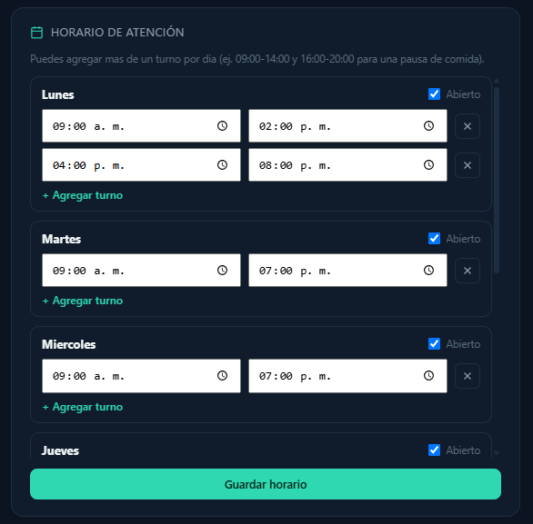
- Dar clic en + Agregar turno para el día deseado.
- Capturar hora de inicio y hora de fin.
- Dar clic en Guardar horario.
Programa de referidos
Al final de todas las opciones de Configuración, aparece un banner para acceder al programa de referidos. Este programa es 100% opcional y se brinda como una manera de poder generar un ingreso extra por la recomendación de Control Dental App.
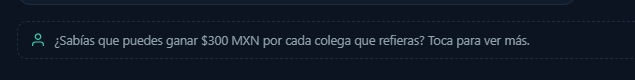
- Dar clic sobre el banner para abrir el detalle del programa.
- Dar clic en Compartir para obtener un mensaje listo para enviar, con el código de referido incluido.
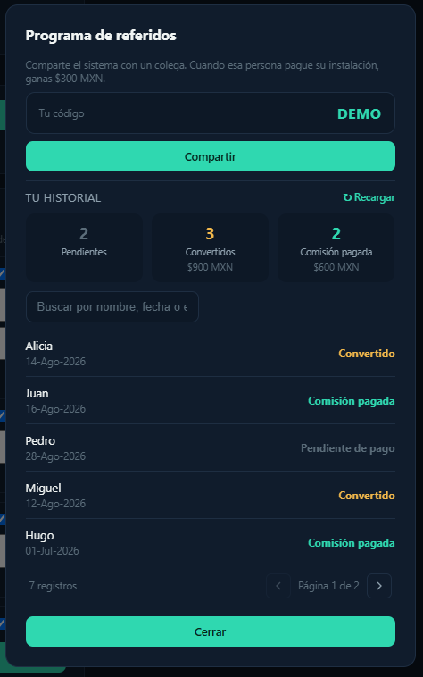
Cada persona referida aparece en la lista junto con su estado:
- Pendiente de pago: se registró con el código, todavía no se le ha pagado ninguna comisión.
- Convertido: ya adquirió el sistema gracias a la referencia.
- Comisión pagada: la comisión correspondiente ya fue liquidada.
Gestión de usuarios (solo Administrador)
Únicamente visible para el usuario con rol de Administrador. Permite dar de alta nuevos usuarios del sistema (por ejemplo, para el personal del consultorio), restablecer contraseñas, y activar o desactivar el acceso de un usuario.
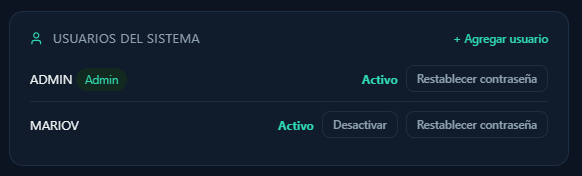
- Dar clic en Agregar usuario.
- Ingresar el nombre de usuario, contraseña inicial e indicar si tendrá rol de Administrador.
- Dar clic en Guardar.
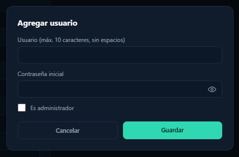
Nota: el nombre de usuario admite máximo 10 caracteres, se convierte automáticamente a mayúsculas, y no acepta espacios ni símbolos.
Restablecer contraseña
Desde la lista de usuarios, cada uno tiene la opción de restablecer su contraseña. A diferencia del alta (donde el Administrador captura la contraseña inicial), aquí el sistema genera una contraseña temporal; cópiela o compártala con la persona, se le pedirá cambiarla la primera vez que inicie sesión.
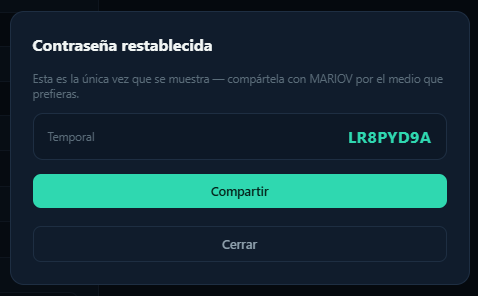
Activar o desactivar un usuario
Cada usuario tiene un interruptor para activarlo o desactivarlo sin eliminarlo; misma función que Pacientes y Tratamientos (Activo/Inactivo). Un usuario desactivado no puede iniciar sesión, pero su nombre se conserva tal cual en la columna "Usuario" de Pacientes, Pagos, Gastos fijos y Tratamientos, y en "Registrado por" de cada cita — nunca se borra ni se reemplaza.
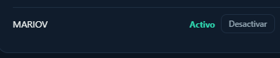
11. Mi cuenta
Muestra el usuario con el que se inició sesión y su rol, y concentra las acciones sobre la cuenta propia.
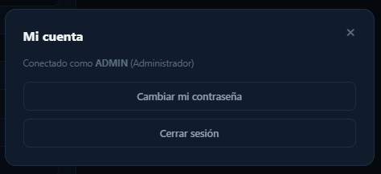
Cambiar mi contraseña
- Dar clic en Cambiar mi contraseña.
- Capturar la contraseña actual y la nueva contraseña.
- Dar clic en Guardar.
Cerrar sesión
- Dar clic en Cerrar sesión.
- Confirmar la acción en la ventana emergente.